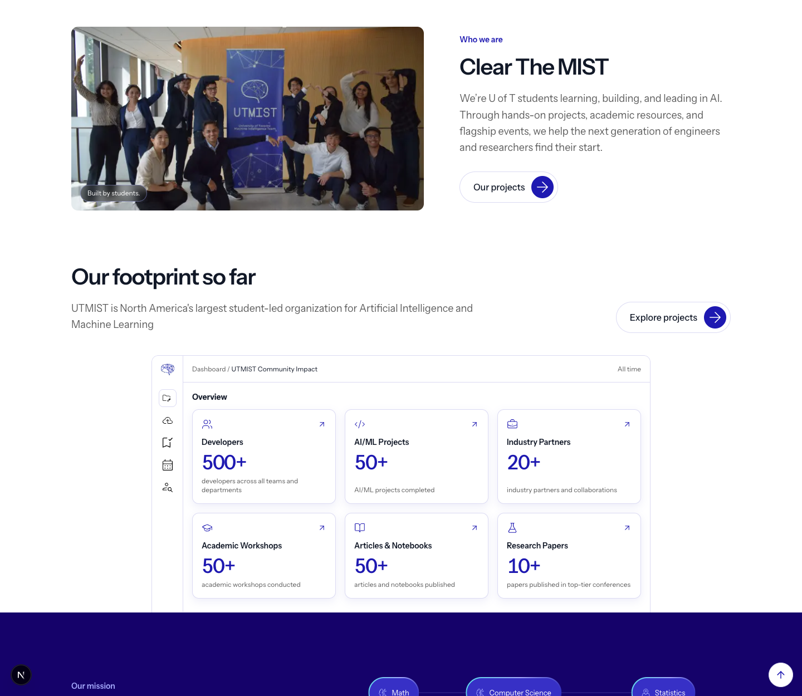
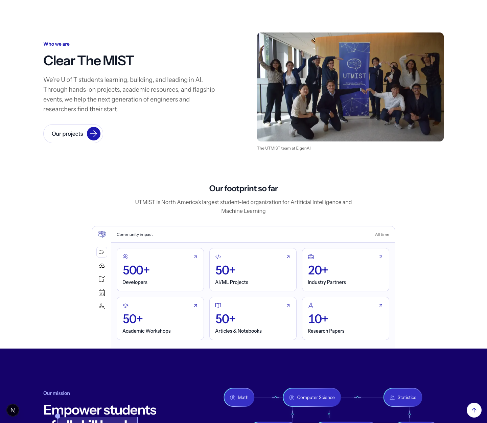

UTMIST / About section
About section: before and after
A smaller photo, one projects action, and simpler impact cards.


UTMIST / About section
A smaller photo, one projects action, and simpler impact cards.

